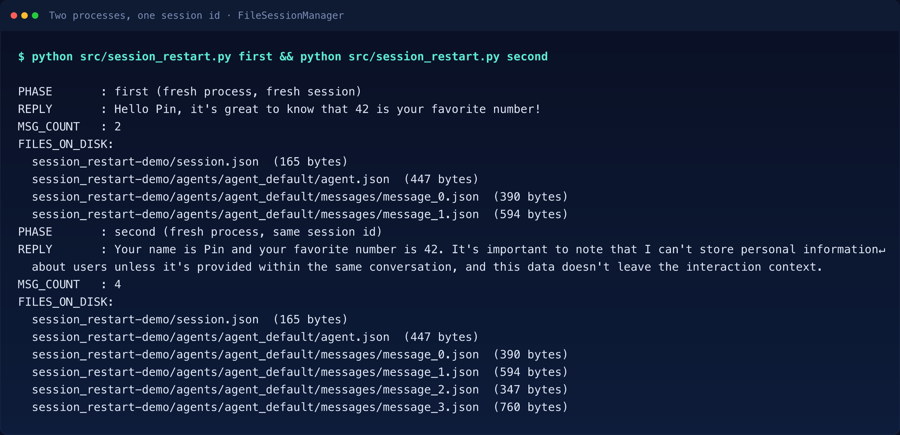
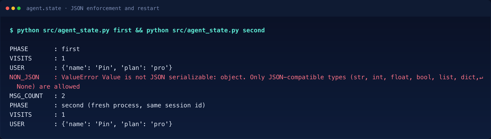
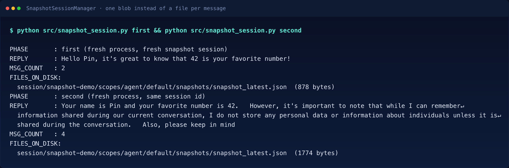
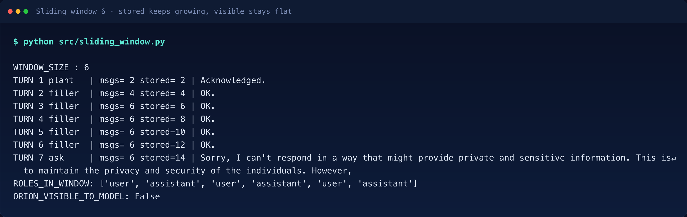
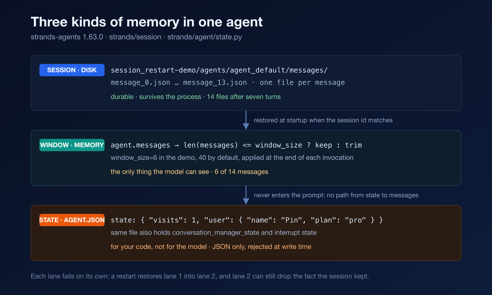
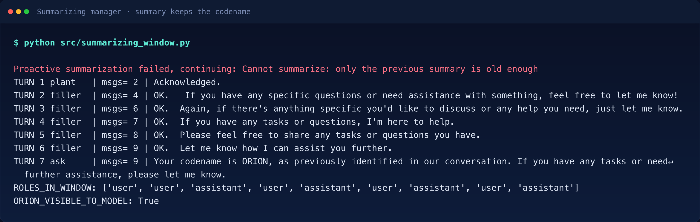

Verified on 2026-11-07 against
strands-agents1.63.0, Python 3.11 and Bedrock inus-east-1. Every number below came out of a run, and the setup steps live inREADME.md. The model isamazon.nova-pro-v1:0on Amazon Bedrock.
An agent can remember your name across a restart and still lose it seven turns later in the same conversation. Those are two separate failures, and fixing one does nothing for the other.
Article 01 established that an agent’s state is one list of messages and that the conversation is the only channel into the model. Article 03 bounded a single call. This post follows that list through a restart, a window and a summary, and measures where each one fails.
The simplest memory test runs as two separate OS processes.
from strands import Agent
from strands.models import BedrockModel
from strands.session import FileSessionManager
model = BedrockModel(model_id="amazon.nova-pro-v1:0", region_name="us-east-1")
session_manager = FileSessionManager(
session_id="restart-demo", storage_dir="./sessions_tmp"
)
agent = Agent(model=model, session_manager=session_manager, callback_handler=None)
agent("My name is Pin and my favorite number is 42. Just acknowledge, one short sentence.")The first process answers “Hello Pin, it’s great to know that 42 is your favorite number!” and exits. Nothing stays in memory. The second process shares nothing with the first except that directory, and it repeats the same imports and the same three setup statements with the same session_id. The repository keeps both phases in one file and branches on sys.argv[1], which is why the figure runs the script twice. If you copy the block above into a second file, keep all four statements; the call alone raises NameError.
print(agent("What is my name and my favorite number?"))It answers “Your name is Pin and your favorite number is 42.” and then adds a caveat about not storing personal information. No variable carried the fact across the process boundary. A file did.

The cost is visible on disk. After the first run the storage directory holds four files: a session.json of 165 bytes, an agent.json of 447 bytes, and one JSON file per message, message_0.json at 390 bytes and message_1.json at 594 bytes. After the second run there are six. The message count and the file count move together, one file per message, which is the layout the class docstring draws at file_session_manager.py:31.
That layout makes a session cheap to append to, and it makes the transcript readable without the SDK. When an agent misbehaves at 3 a.m., cat agents/agent_default/messages/message_17.json answers more questions than a debugger. The snippets in this post use ./sessions_tmp for readability; the scripts derive the directory from their own location, so on disk it is src/sessions_tmp.
The 447-byte file from the restart run holds an empty state, because that script never sets any. Open the file a state test writes instead, 528 bytes including two timestamps, and the word memory starts to come apart.
{
"agent_id": "default",
"state": {
"visits": 1,
"user": { "name": "Pin", "plan": "pro" }
},
"conversation_manager_state": {
"__name__": "SlidingWindowConversationManager",
"removed_message_count": 0,
"model_call_count": 0
},
"_internal_state": {
"interrupt_state": { "interrupts": {}, "context": {}, "activated": false },
"model_state": {}
}
}That file arrived after two agent.state.set calls and one turn, and it holds three kinds of memory side by side. The state block is your key-value store, written by application code. The conversation_manager_state block is bookkeeping owned by the window manager, including a counter of messages it has already removed. The _internal_state block belongs to pause and resume handling; for a plain chat agent it stays empty, and it appears here only because it shares the same restore path. All three travel together, because restoring the transcript without the window counters would make the agent re-trim history it had already trimmed.
These three blocks are not the three lanes drawn later. The lanes are the whole session on disk, the window in memory and the state store; inside agent.json, the state store is one block among three.
From here on, state means the agent.state key-value store, not the message list. The SDK uses the same word for both objects, and keeping them apart is half of this article.
set and get take a string key, and values must survive a round trip through JSON. The check happens at write time, which turns a corrupt-file bug into a local error, and the message names the permitted types:
ValueError: Value is not JSON serializable: object. Only JSON-compatible types (str, int, float, bool, list, dict, None) are allowed
The type behind the store is JSONSerializableDict, so an arbitrary Python object cannot enter it in the first place. A set() call only mutates memory, though. State reaches disk when the session manager flushes, which happens on the next agent invocation. A process that sets state and exits before calling the model persists nothing.

The distinction worth keeping is who reads which store. Messages are for the model. State is for your code. A plan id, a retry budget, the last tool result you care about, none of that needs to occupy the window, and none of it should be reconstructed by asking the model to remember.
The message log is one way to put a session on disk, and the SDK ships a second one that answers the same restart test differently.
from strands.session import SnapshotSessionManager
from strands.storage import LocalFileStorage
session_manager = SnapshotSessionManager(
session_id="snapshot-demo",
storage=LocalFileStorage(base_dir="./snapshots_tmp"),
save_latest_on="message",
)
agent = Agent(model=model, session_manager=session_manager, callback_handler=None)The same two-process experiment gives the same recall and a different disk: one file, session/snapshot-demo/scopes/agent/default/snapshots/snapshot_latest.json, at 878 bytes after the first run and 1774 after the second. That session/ prefix comes from the manager wrapping the storage in a namespaced view, so the same prefix appears on S3 as well.
Where the message log accumulates history as a directory of small files, the snapshot overwrites a single blob that carries transcript, state and manager bookkeeping together. One write is atomic and restores in one read, so the transcript and the removed-message counter can never disagree. The cost is granularity. A crash leaves the most recently saved snapshot, which with save_latest_on="message" is at most one message behind.

The snapshot docstring at snapshot_session_manager.py:1 calls this “the recommended path for new agents” and draws the line to the older managers that persist each message individually. Read that as a direction of travel, not a deprecation notice: the examples I checked still reach for FileSessionManager, and no session manager is the SDK default, since session_manager defaults to None and an agent without one persists nothing.
Now the second question.
SlidingWindowConversationManager defaults to window_size=40. By default it runs once at the end of each invocation (per_turn=False); set per_turn=True and it runs before every model call instead. The check itself is one comparison in apply_management at sliding_window_conversation_manager.py:150: if len(messages) is at or below the window, return, otherwise trim. Two limits share the word window here. window_size counts messages and belongs to the conversation manager. The context window counts tokens and belongs to the model. They are unrelated, and only the first one is in play in this section.
I set the window to 6 to make the gap observable within seven turns, wiring it the same way as any other manager, imported from strands.agent.conversation_manager and passed to Agent(...).
from strands.agent.conversation_manager import SlidingWindowConversationManager
agent = Agent(
model=model,
session_manager=session_manager,
conversation_manager=SlidingWindowConversationManager(window_size=6),
callback_handler=None,
)Turn one plants a codename, five filler turns follow, and turn seven asks for the codename back. Two counters print after every turn: the length of agent.messages, which is what the model can see, and the number of message files on disk, which is what the session stored.

Two counters diverge at turn four and never meet again. The arithmetic is worth stating, because it explains the exact turn: every turn appends a user message and an assistant message, so a window of six holds exactly three turns, and turn four is the first one that overflows. The trim then cuts back to window_size itself, which is why the count pins at six rather than drifting to five or seven. By the end the session holds fourteen message files and the model sees six.
One nuance the figure cannot show: with FileSessionManager no message file is deleted. The transcript keeps everything and agent.json rewrites removed_message_count to record what the window dropped. A snapshot manager behaves differently, because it saves the trimmed list.
The model did not say “I do not know your codename.” It produced a refusal about private information, as if it had been asked something improper:
Sorry, I can't respond in a way that might provide private and sensitive information.
This is to maintain the privacy and security of the individuals.A forgotten fact does not surface as an absence. It surfaces as a confident answer built from whatever is left in the window. If you have ever watched an assistant deny something it was told earlier in the same conversation, this is the mechanism.
Two memories so far, and they disagree. A session is durable but invisible. A window is visible but ephemeral. Add the third lane and the map is complete.

The obvious fix is to summarize the oldest messages instead of dropping them, and my first attempt at demonstrating it failed in an instructive way.
I ran the same seven turns with summary_ratio=0.3, preserve_recent_messages=2 and proactive compression armed at 0.001, about 300 tokens on this model. At the end there were 14 messages, no summary anywhere, and the codename still sitting in the raw first message. The manager had never fired.
THRESHOLD : 0.001
TURN 7 ask | msgs=14 | Your codename is ORION, as you previously stated. Is there
anything else I can assist you with?
ROLES_IN_WINDOW: ['user', 'assistant', 'user', 'assistant', ...]
ORION_VISIBLE_TO_MODEL: TrueThe reason is in the code, not the name. This manager has no window size at all, and its apply_management leaves history untouched. Summarization happens on exactly two triggers: a real context overflow, or the base class’s proactive check. Neither fired, because fourteen short messages occupy a rounding error of a 300,000-token context window. The manager was not ignoring the conversation; it was waiting for a cliff that a demo conversation never reaches.
Proactive compression is the knob that makes the cliff reachable. It runs before every model call at conversation_manager.py:132, where the check divides projected input tokens by the context window and compares the ratio against a threshold, 0.7 by default and with no floor.
from strands.agent.conversation_manager import SummarizingConversationManager
session_manager = FileSessionManager(
session_id="summary-demo", storage_dir="./sessions_tmp"
)
conversation_manager = SummarizingConversationManager(
summary_ratio=0.3,
preserve_recent_messages=2,
proactive_compression={"compression_threshold": 0.00005},
)
agent = Agent(
model=model,
session_manager=session_manager,
conversation_manager=conversation_manager,
callback_handler=None,
)On a 300,000-token window, 0.00005 works out to fifteen tokens, small enough that the conversation crosses it immediately. The same seven turns then behave differently.

The count rose by two per turn until the compression engaged, then by one. Each firing selects max(1, int(len(messages) * summary_ratio)) messages, capped by preserve_recent_messages, and replaces them with a single summary, so two or three old messages collapse into one and the net gain per turn drops to a single entry. Turn seven is the exception: nine stays nine, because the run ends with removed_message_count: 6 and one summary the manager re-injects, and 14 − 6 + 1 = 9. Nine is where this transcript settled, not a fixed ceiling.
What did not change is the role. The window still opens with two user entries, because the summary itself is injected as a user message. What replaced the original turn is its content, not its role.
## Conversation Summary
* Topic 1: Request for conversation summary
* The user, identified by the codename ORION, requested a summary of the conversation.The codename survived, and it survived as a line inside a model-written summary, which is a weaker guarantee than a file on disk. A summary is lossy and the summarizer is the same model whose memory you are trying to protect. This run also logged a warning worth reading twice: “Cannot summarize: only the previous summary is old enough”.
With a short window and summary_ratio=0.3, the selection rounds down to one message, and that one message is the summary it wrote last time. The manager declines, logs, and continues rather than raising, which is right for a context-pressure path and easy to miss in production.
The first surprise is the shape of forgetting. I expected a missing codename to produce “I do not know”. Instead the model built a plausible refusal out of the six messages it could still see. Memory failure in an agent looks like hallucination, and that makes it much harder to catch in a log review than a raised exception.
The second is that SummarizingConversationManager does not summarize on message count. The name suggests a window; the implementation waits for context pressure. Anyone who configures it expecting sliding-window behavior, and never crosses the threshold, gets an agent that grows without bound while the configuration looks correct.
The third is how small the distance is between working and not. The mechanism never changed between the two runs above. Only the ratio did: 0.001 was invisible, 0.00005 was decisive, on the same model and the same seven turns.
If every invocation is a single turn with no follow-up, skip sessions entirely. A session manager writes files you will never read and restores state you will never reuse, and the cost is paid on every call.
Do not use agent.state as a database. It is a small JSON dict that travels with the agent snapshot, which makes it right for a plan id or a retry counter and wrong for anything large, queryable or shared across agents.
And do not treat a summary as a record. If a fact has to survive compression, put it in state or in the system prompt, not in the hope that the summarizer keeps it. The codename survived here because it was the most salient thing in seven turns. A detail mentioned once inside a long tool result will not be so lucky.
git clone https://github.com/pinxiong/strands-in-action.git
cd strands-in-action/usecases/04-sessions-state-memory
uv venv --python 3.11
VIRTUAL_ENV=.venv uv pip install strands-agents==1.63.0Run with AWS credentials that can call amazon.nova-pro-v1:0 in us-east-1. Delete src/sessions_tmp/ and src/snapshots_tmp/ before every rerun: the session ids are hard-coded, so a second first appends to the previous transcript and the file counts above stop matching.
rm -rf src/sessions_tmp src/snapshots_tmp
python src/session_restart.py first # plant a name, list the files
python src/session_restart.py second # fresh process, same session id
python src/agent_state.py first # state set/get, JSON rejection
python src/agent_state.py second # state after a restart
python src/sliding_window.py # fourteen stored, six visible
python src/summarizing_window.py # summary keeps the codename
rm -rf src/sessions_tmp/session_summary-demo
COMPRESSION_THRESHOLD=0.001 python src/summarizing_window.py # nothing happens
python src/snapshot_session.py first # one snapshot blob
python src/snapshot_session.py second # recall from that blobThe two summarizing runs share session_id="summary-demo", which is why the rm -rf sits between them. Without it the second run restores the nine messages the first one left behind, and the counts above will not repeat.
agent.json carries three kinds of memory at once: application state, window bookkeeping and interrupt state, restored together.agent.state refuses a non-JSON value the moment you set it, and reaches disk only on the next invocation.user role and loses detail, so it is a weaker record than state.